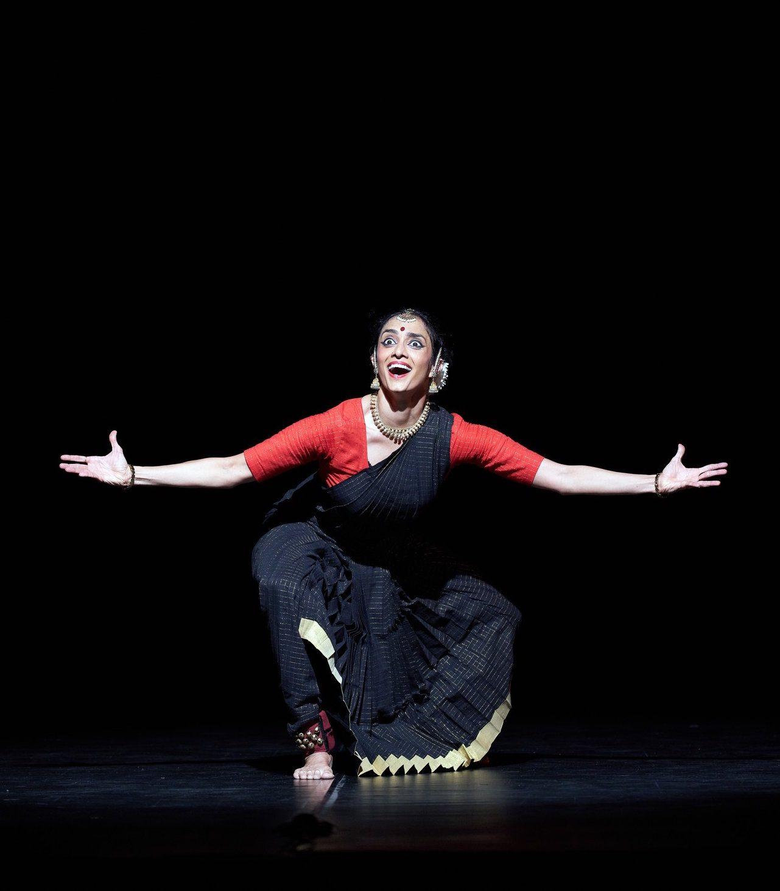
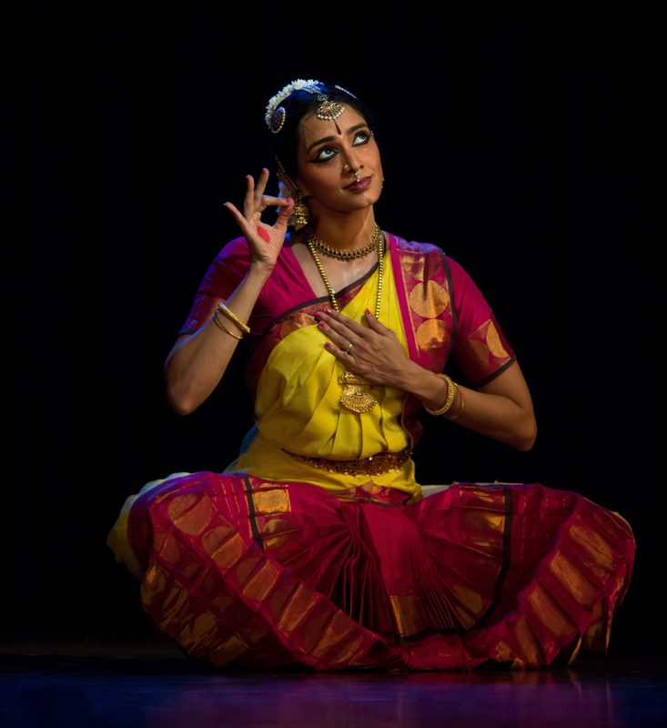

Bharatanatyam
Lakshmi
Parthasarathy
Athreya
Performer · Choreographer · Educator

About
Over forty years in the form
A disciple of Guru Smt. Chitra Visweswaran at the Chidambaram Academy of Performing Arts, Chennai, Lakshmi has trained in Bharatanatyam for more than thirty-five years.
She has performed at The Music Academy, Kalakshetra, the NCPA and NMACC in Mumbai, and the India International Centre in New Delhi. Her work has travelled to the United States, Australia, the Gulf, East Africa, Sri Lanka, Japan and across Europe.
Her thematic productions build contemporary narratives on the foundations of the classical tradition. Trained as an architect at CEPT, Ahmedabad, she brings a feel for space and geometry to her choreography.
Productions
Works
-
2026
Nriyarpana
UK and Europe premiere, September–October 2026.
-
2024
Prabodhan — an awakening
European premiere October 2025; US premiere March 2026.
Watch trailer -
2023
Ravana — the dot that moved
Premiered at Malavika Sarukkai’s Dance for Dance Festival, Chennai.
Watch excerpt -
2021
Sweet Surrender
-
2019
Nisarga
Ongoing.
-
2016
Aprameyah Padmanabha
A thematic production on Lord Padmanabha, supported by the Ministry of Culture, Government of India.
Watch excerpt -
2014
Cowherd Damsel’s Lament
Watch excerpt -
2014
Ganga — a reckoning
Watch excerpt -
2012
Sakhyam
A duet on friendship with Uma Sathyanarayanan, commissioned by Natyarangam and presented across India.
Watch excerpt -
2003
Kodhai Alwar
Her first thematic production, on the poet-saint Andal. Revisited in 2009 and 2018.
Performance
Watch
Stills
Gallery


Press
“It looked like Lakshmi had wings on her feet as she moved across the wide expanse of the stage.”
Rupa Srikanth, The Hindu, 2022
“The rich movement vocabulary of Bharata Natyam was given a crisp workout by Lakshmi, who not only has a command of the technique but the interpretive powers to make it work for her.”
Jill Sykes, The Sydney Morning Herald, 2014
“A delightful combination of the grace and light-footedness of her guru’s, the geometry of a precise natyarambam, sharp mudras, crisp execution.”
Rupa Srikanth, The Hindu, 2019
“Her performance had the capacity to turn an ordinary audience into rasikas, which is truly a gift for an artiste.”
Daijiworld, Mangalore, 2009
Recognition
- Senior Fellowship, Ministry of Culture, Government of India 2025
- Selected by Sangeet Natak Akademi to represent Bharatanatyam at Expo Osaka 2025
- Sanskriti–Madhobi Chatterji Memorial Fellowship 2020
- Ustad Bismillah Khan Yuva Puraskar, Sangeet Natak Akademi 2013
- Natya Kala Rathna, Rasika Ranjini Sabha, Mumbai 2010
- Yuva Kala Bharathi, Bharat Kalachar 2009
- Empanelled artiste, Indian Council for Cultural Relations
Teaching
Pravaaha Centre for Movement
Founded by Lakshmi in 2017, Pravaaha is her school in Adyar, Chennai, where she trains students in Bharatanatyam technique, repertoire and abhinaya.
She also leads workshops and masterclasses in India and abroad. They are tailored to age and experience, and cover both the technique and the cultural and philosophical side of the form. Recent workshops have been held in Belgium, Paris, Berlin, Copenhagen, Bonn, Atlanta and Florida, and at CEPT, Ahmedabad.
Contact
Performances, workshops & classes
+91 98844 30099
No. 10, Jeevarathnam Nagar 2nd Street, Adyar, Chennai 600020